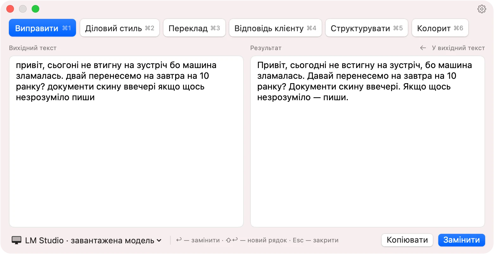
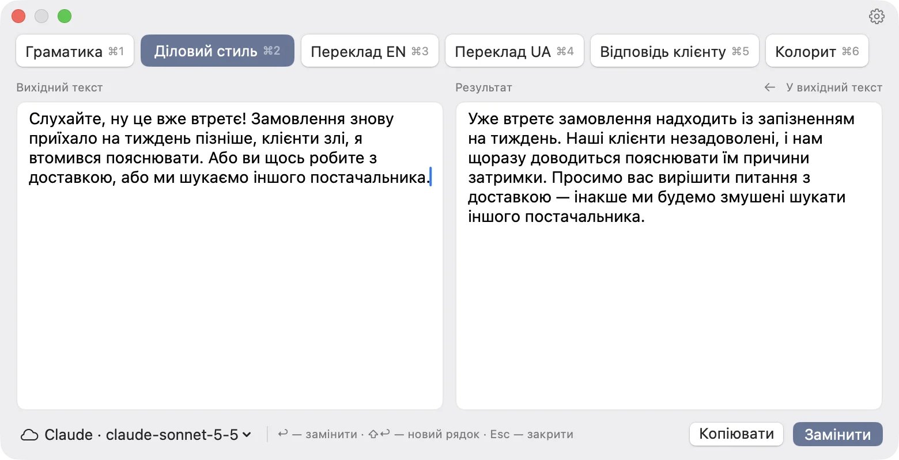
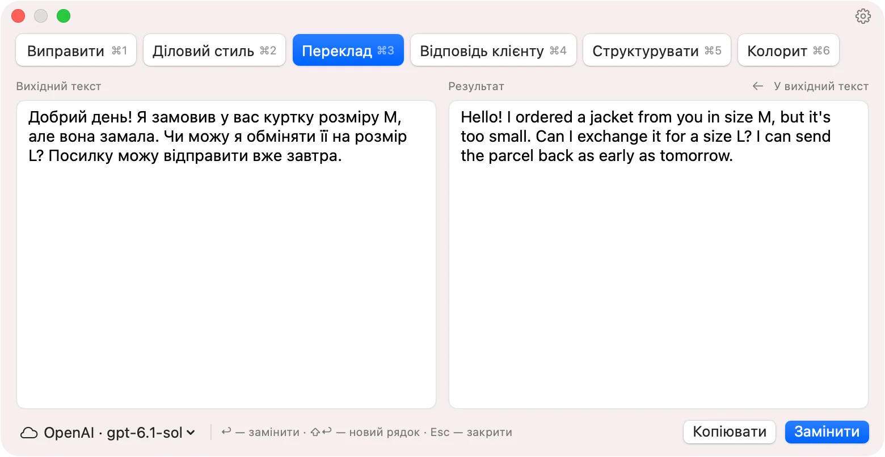
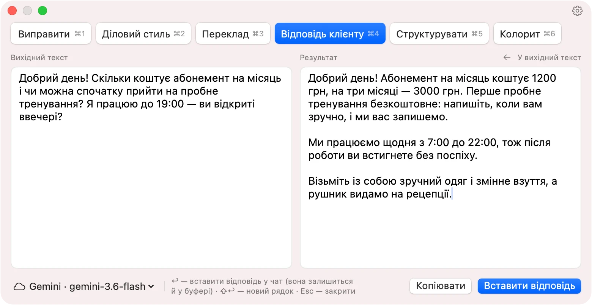
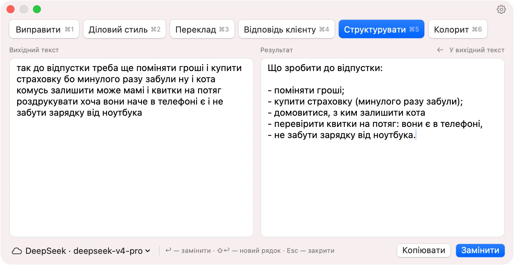
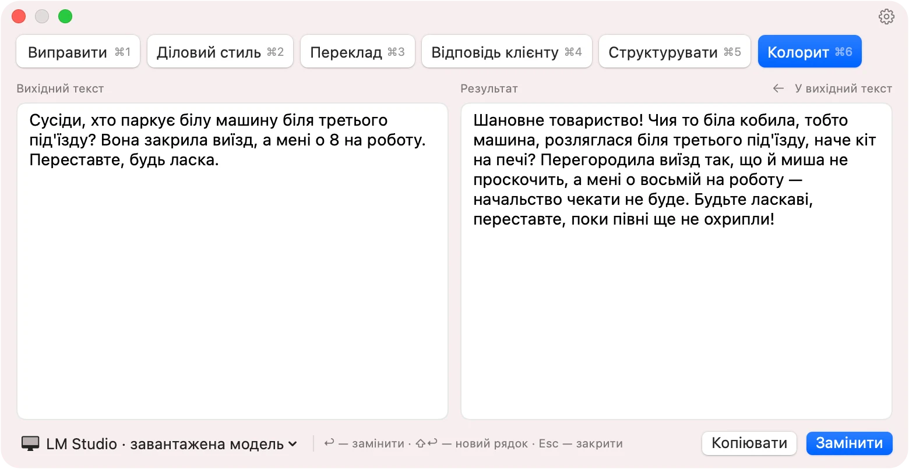

Виправити ⌘1
Пишіть як зручно — надсилайте без помилок
Виправляє одруківки, пунктуацію й великі літери, але зберігає ваші слова й тон. Нічого не переписує зайвого.

Виправлення помилок, діловий стиль, переклад і відповіді клієнтам — у будь-якій програмі на Mac. Виділіть текст і натисніть ⌘T.

У пошті, месенджері, браузері чи документі — у будь-якій програмі.
Відкриється вікно з вашим текстом — оберіть стиль клавішею ⌘1…⌘9.
Результат стане на місце виділеного тексту — там, де ви писали.
Стиль — це готова інструкція для моделі. Ось шість прикладів, а власний стиль можна створити за хвилину.
Виправляє одруківки, пунктуацію й великі літери, але зберігає ваші слова й тон. Нічого не переписує зайвого.

Різке чи сумбурне повідомлення стає ввічливим і твердим листом партнерові. Усі факти лишаються на місці.
Мова оригіналу визначається сама: українська стає англійською, англійська — українською. Звучить природно, як у носія мови.

Виділіть повідомлення клієнта в Telegram чи Viber — і отримайте відповідь лише з фактів вашої бази знань: ціни, графік, умови. Готова відповідь вставляється просто в поле чату.
Покладіть базу в спільну папку iCloud чи Synology Drive — і вся команда відповідатиме однаково, а правки колег одразу потраплять у відповіді.

З нотатки, голосового чи конспекту дзвінка робить чіткий список або зв'язний текст — без повторів і зайвих слів.

Буденне повідомлення стає промовою дотепного дядька з Полтавщини: приказки, порівняння, перебільшення — а факти на місці. Стиль може бути будь-яким, навіть смішним.

Claude, OpenAI, Gemini, DeepSeek і DeepL — або LM Studio чи Ollama просто на вашому Mac.
Переклад — через DeepL, відповіді клієнтам — через Claude, чернетки — локально. Стиль пам'ятає свою модель.
До дев'яти стилів на ⌘1…⌘9 — кожен зі своєю інструкцією для моделі.
Документи .md, .txt, .docx, .rtf і .pdf у спільній папці — і відповіді клієнтам будуються на них.
Збережіть стилі в файл і передайте колегам — вони імпортують їх одним кліком.
Останні 50 результатів завжди під рукою — у меню застосунку.
З LM Studio чи Ollama текст узагалі не залишає ваш Mac. Хмарним моделям він передається напряму, без проміжних серверів, а ключі API зберігаються у Зв'язці ключів macOS. Крім перевірки оновлень на GitHub, застосунок нічого не надсилає й нічого про вас не збирає.
Натисніть «Завантажити» і розпакуйте архів Harno.zip.
Перетягніть Harno у папку «Програми» і запустіть.
Якщо macOS попередить, що не може перевірити застосунок, відкрийте Системні параметри → Приватність і безпека → «Усе одно відкрити».
Дозвольте «Універсальний доступ» — щоб застосунок міг брати виділений текст. Потім додайте ключ API або запустіть LM Studio чи Ollama.
Одна команда завантажить останню версію, поставить її в «Програми» і запустить — без попередження macOS про неперевіреного розробника. Цією ж командою можна оновитися.
curl -fsSL https://harno.tehnokrat.ua/install.sh | sh
Скрипт можна переглянути: install.sh. Універсальний доступ macOS дозволяє вмикати лише вручну — Harno сам попросить його під час першого запуску.
Ми часто випускаємо оновлення, і застосунок сам пропонує їх встановити. Ось що змінилося останнім часом.
Harno у бета-версії, і саме ваші відгуки визначають, що ми зробимо далі. Розкажіть, чого бракує, що незручно або що зламалося, — ми читаємо кожне повідомлення.
Написати намЗастосунок уже щодня працює в нашій команді, але ми ще допрацьовуємо його й часто випускаємо оновлення. Можливі дрібні недоліки — якщо щось піде не так, напишіть нам.
Так, застосунок безкоштовний. Хмарні моделі ви оплачуєте напряму в сервісі за своїм ключем API — зазвичай це частки цента за запит. LM Studio, Ollama й локальні моделі безкоштовні.
macOS 14 Sonoma або новіша. Працює на Mac з Apple Silicon та Intel.
Тільки до моделі, яку ви обрали для стилю. З LM Studio чи Ollama — нікуди: обробка відбувається на вашому Mac.
У налаштуваннях застосунку біля кожного сервісу є посилання «Отримати ключ». Ключ зберігається у Зв'язці ключів macOS.
Застосунок підписаний, але ще не пройшов нотаризацію Apple. Дозвольте запуск один раз у «Приватність і безпека» — далі він відкривається як звичайно.
Застосунок сам перевіряє оновлення й встановлює їх одним кліком — налаштування, ключі та дозволи зберігаються.